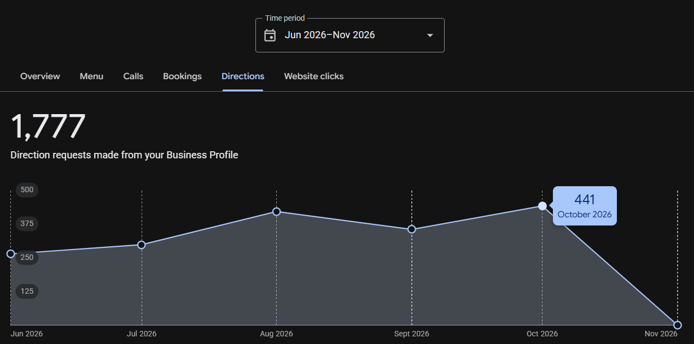
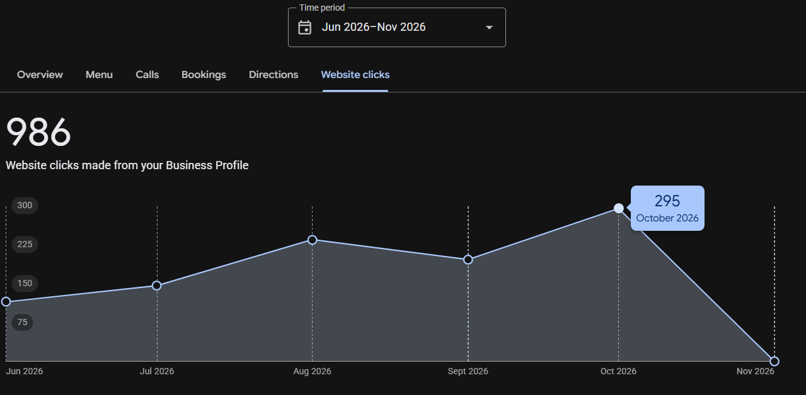
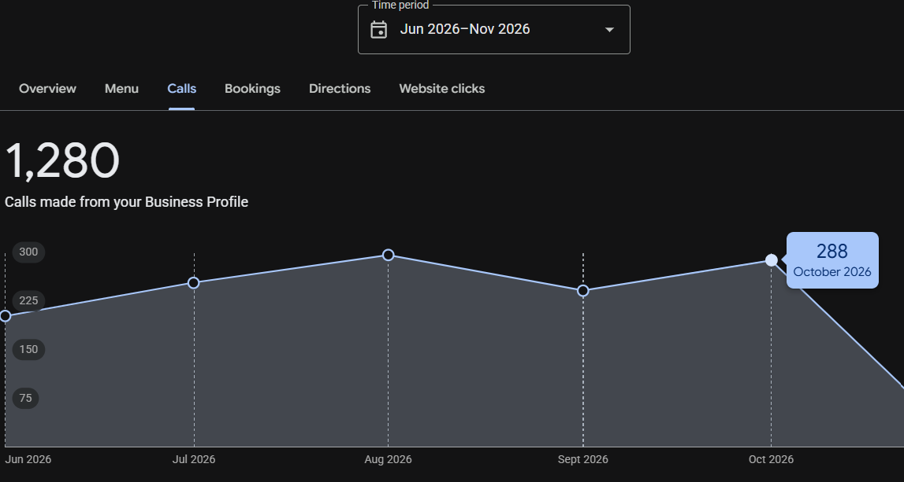
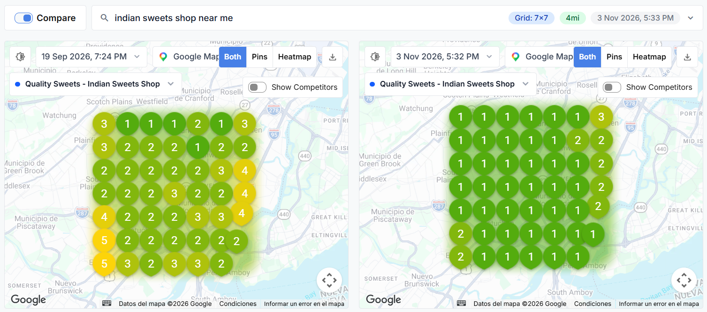
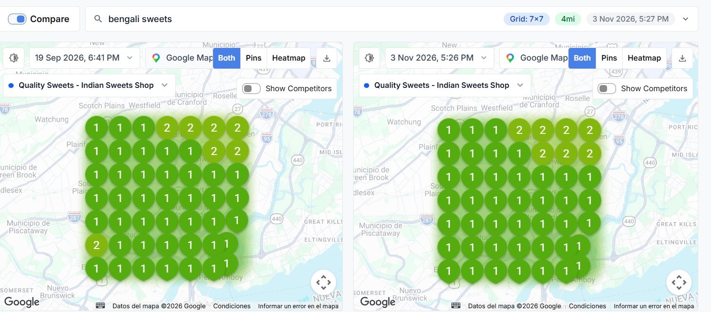
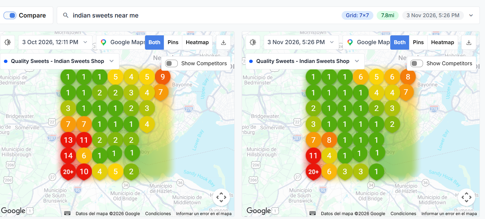
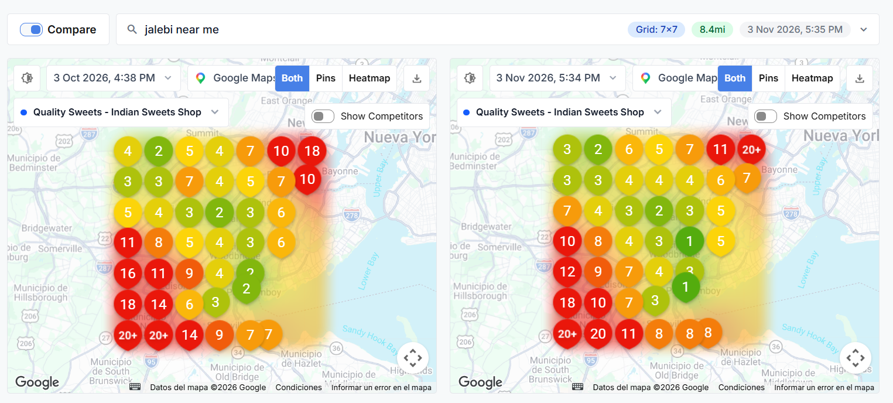
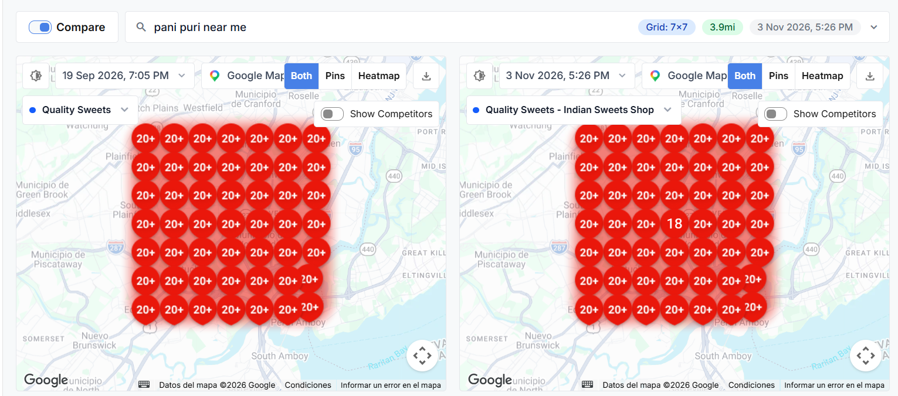
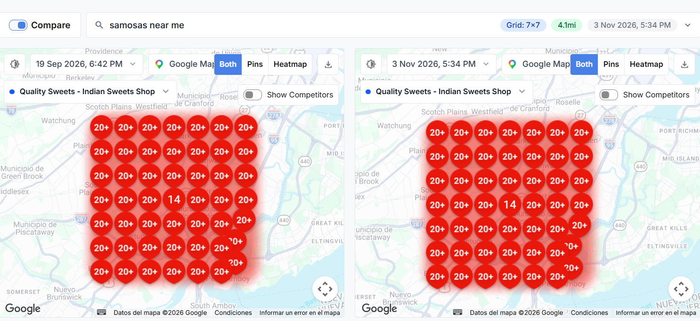

🛍️ Ventas E-commerce Online
$2,120.91
19 pedidos completados • $111.63 AOV
284 carritos iniciados en BigCommerce
284 carritos iniciados en BigCommerce
▲ +7,450% vs Sept ($28.09)
📍 Intención Local Directa (GBP)
729
288 llamadas + 441 rutas
Clientes navegando directamente a la tienda
Clientes navegando directamente a la tienda
⚡ Récord Histórico de Rutas (+16.1%)
🌐 Clics en Búsqueda (GSC)
769
24,203 impresiones en Google
Posición promedio mejorada a #7.3
Posición promedio mejorada a #7.3
▲ +212.6% vs Sept (246 clics)
👥 Tráfico Web Total (GA4)
1,411
1,121 usuarios • 5,634 vistas
5m 12s tiempo medio en orgánico
5m 12s tiempo medio en orgánico
▲ +169.8% Sesiones (523 en sept)
🚀 Hitos y Crecimiento Destacado en Octubre 2026
- Explosión en Ventas Online a $2,120.91 (+7,450%): Se pasó de 1 venta aislada ($28.09) en septiembre a 19 pedidos completados con un ticket promedio de $111.63, impulsado por el rediseño del botón Add to Cart, la supresión de botones distractores (Wishlist/Pinterest) y la optimización PDP del Lote 1.
- Exposición en Google Search se Disparó a 24,203 Impresiones (+59.7%): Google Search Console registró 769 clics directos (+212.6%) frente a los 246 de septiembre, duplicando la tasa de clics (CTR del 1.62% al 3.18%) y escalando a posición media #7.3.
- Máximo Histórico en Google Business Profile (1,024 Interacciones Totales): La ficha local registró 441 solicitudes de dirección a la tienda física en Oak Tree Rd (+16.1%), 288 llamadas telefónicas (+20.0%) y 295 clics directos hacia la web (+59.5%), impulsado por la publicación semanal de posts estratégicos y la subida periódica de fotografías reales de productos y vitrinas.
- Monopolio #1 en el Local 3-Pack de Google Maps: Dominio absoluto en cuadrículas 7x7 para "indian sweets shop near me" y "bengali sweets" (con el 88%-92% de los pines en posición #1 indiscutible en Edison, Iselin, Woodbridge y alrededores).
- Retención y Tráfico Orgánico de Calidad Superior: GA4 registró 928 sesiones de búsqueda orgánica con una permanencia media de 5m 12s y una tasa de rebote ultra reducida del 24.89%, demostrando que los visitantes llegan con altísima intención transaccional.
-
Apertura del Canal de Búsqueda con Inteligencia Artificial (GEO): Se registraron 46 sesiones desde Asistentes de IA (ChatGPT, Perplexity) gracias a la implementación de
/llms.txty schemas semánticos, captando nuevos perfiles de consumidores tecnológicos.
1. Resumen Ejecutivo de Rendimiento Comercial
| Área Auditada | Métrica Registrada (Octubre 2026) | Fuente Oficial | Interpretación Comercial Factual |
|---|---|---|---|
| Ingresos E-commerce | $2,120.91 (19 Pedidos) | GA4 + BigCommerce | Crecimiento de +7,450% en facturación digital respecto a septiembre. Ticket promedio de $111.63 tras optimización del embudo y fichas PDP. |
| Intención de Visita a Tienda Física | 441 Solicitudes de Ruta | Google Business Profile | Pico máximo histórico del semestre. 441 personas solicitaron direcciones GPS para acudir presencialmente al local en Oak Tree Rd. |
| Llamadas Comerciales Directas | 288 Llamadas | Google Business Profile | 9.3 llamadas diarias promedio (+20% vs sept) generadas por clientes solicitando disponibilidad de dulces, pedidos de catering y takeout. |
| Visibilidad en Google Search | 769 clics (24,203 imp.) | Search Console API | Incremento del +212.6% en clics orgánicos con posición media #7.3. Fuerte posicionamiento en términos de marca, cajas de mithai y dulces indios. |
| Tráfico Total en el Sitio Web | 1,411 sesiones (1,121 usuarios) | Google Analytics 4 | Multiplicación x2.7 del tráfico global (+169.8% sesiones vs 523 en sept). 882 sesiones de alta interacción con 5,634 páginas vistas. |
| Autoridad Local y Citaciones | 40 Nuevas Citaciones Creadas | Bonsai Plataforma | Despliegue verificado en los 40 directorios comerciales más influyentes de EE.UU. consolidando consistencia NAP (Nombre, Dirección, Teléfono). |
| Gestión Activa de Contenido GBP | Posts Semanales + Subida de Fotos | Google Business Profile | Publicación continua de novedades comerciales y fotos reales de dulces y platos calientes, activando señales de actividad constante para el algoritmo local de Google. |
2. Rendimiento Orgánico en Google Search Console
Términos Clave Comerciales y Posición en Google Search
GSC Oficial API
| Término de Búsqueda (Keyword) | Clics Directos | Impresiones | CTR (%) | Posición Media |
|---|---|---|---|---|
| quality sweets (Búsqueda de Marca) | 80 clics | 492 | 16.3% | #2.0 (Top 2) |
| quality sweets edison | 17 clics | 74 | 23.0% | #1.5 (Top 1) |
| quality sweets iselin nj | 14 clics | 70 | 20.0% | #1.1 (Top 1) |
| quality sweets menu | 14 clics | 60 | 23.3% | #2.0 (Top 2) |
| quality sweets nj | 11 clics | 22 | 50.0% | #1.1 (Top 1) |
| kwality sweets near me (Variante común) | 8 clics | 40 | 20.0% | #1.1 (Top 1) |
| indian sweets near me | 6 clics | 547 | 1.1% | #5.5 (Top 5) |
| bengali sweets online usa | 5 clics | 33 | 15.2% | #5.3 (Top 5) |
| indian sweets gift box usa | 5 clics | 155 | 3.2% | #9.4 (Pág. 1) |
| quality sweets edison nj | 5 clics | 12 | 41.7% | #1.2 (Top 1) |
| indian sweets | 4 clics | 56 | 7.1% | #5.8 (Top 6) |
| indian sweets edison nj | 4 clics | 76 | 5.3% | #5.9 (Top 6) |
| mithai | 4 clics | 98 | 4.1% | #7.4 (Pág. 1) |
| indian sweets new jersey | 3 clics | 45 | 6.7% | #5.1 (Top 5) |
| mithai box | 3 clics | 190 | 1.6% | #10.0 (Pág. 1) |
| Otras 180+ Consultas Transaccionales Agrupadas* | 586 clics | 22,183 | 2.6% | #7.3 |
| TOTAL CONSOLIDADO GOOGLE SEARCH | 769 CLICS | 24,203 | 3.18% | #7.3 (Pág. 1) |
* En octubre el número de palabras clave distintas que generaron clics pasó de 42 a más de 190 términos únicos, reflejando la indexación de páginas temáticas de dulces, cajas de regalo festivas y menú tradicional indio.
Rendimiento por Páginas del Sitio (Tráfico y Búsqueda Orgánica)
GA4 + Search Console
| Página / Categoría | Clics GSC | Impresiones GSC | CTR GSC | Posición GSC |
|---|---|---|---|---|
Ficha Google Maps (website-button UTM) |
273 | 4,694 | 5.8% | #7.0 (Pág. 1) |
Página Principal (/) |
206 | 8,226 | 2.5% | #6.0 (Top 6) |
Cajas de Mithai (/mithai-box/) |
56 | 3,783 | 1.5% | #8.3 (Pág. 1) |
Catálogo Indian Sweets (/indian-sweets/) |
55 | 4,822 | 1.1% | #5.5 (Top 5) |
Dulces Bengalíes (/bengali-sweets/) |
30 | 1,056 | 2.8% | #6.7 (Pág. 1) |
| Página Principal HTTP (Redirigida) | 27 | 461 | 5.9% | #6.8 |
Snacks Listos (/ready-made/) |
17 | 865 | 2.0% | #5.6 (Top 6) |
Campaña Karva Chauth (/karva-chauth-box/) |
14 | 234 | 6.0% | #5.9 (Top 6) |
Ubicación Local (/locations/iselin-nj/) |
14 | 1,818 | 0.8% | #4.5 (Top 5) |
Servicio de Catering (/catering/) |
13 | 243 | 5.3% | #5.8 (Top 6) |
Familia de Barfi (/barfi/) |
10 | 932 | 1.1% | #6.8 |
Mithai Tradicional (/traditional-mithai/) |
8 | 856 | 0.9% | #4.5 (Top 5) |
Menú de Restaurante (/menu/) |
7 | 1,434 | 0.5% | #4.4 (Top 5) |
Snacks Salados (/indian-snacks/) |
6 | 1,533 | 0.4% | #5.6 |
Besan Ladoo PDP (/besan-ladoo/) |
5 | 157 | 3.2% | #8.3 |
3. Embudo E-commerce & Conversión Comercial
$2,120.91 Facturados
1. Vistas de Productos (Fichas PDP)
906 eventos (340 compradores)
2. Añadidos al Carrito de Compra
284 eventos (95 usuarios)
3. Pasos de Checkout Iniciados
86 eventos (59 usuarios)
4. Transacciones Completadas
19 Pedidos ($111.63 ticket medio)
⚡ Conversión Checkout a Venta: 22.1% • Además se captaron 11 cotizaciones de catering y 17 llamadas web.
4. Fuentes de Adquisición de Tráfico (GA4)
Google Analytics 4
| Canal | Usuarios | Sesiones | Duración | Tasa Rebote |
|---|---|---|---|---|
| Google Orgánico | 697 (62%) | 928 (66%) | 5m 12s ⭐ | 24.9% |
| Directo | 376 (34%) | 428 (30%) | 1m 58s | 65.7% |
| Asistentes de IA (GEO) | 43 (4%) | 46 (3%) | 2m 32s | 26.1% |
| Referidos / Otros | 8 (1%) | 9 (1%) | 3m 45s | 50.0% |
5. Rendimiento en Google Business Profile (Métricas Oficiales)
Datos oficiales auditados del panel de Google Business Profile del período Junio – Noviembre 2026. En octubre 2026 se alcanzaron máximos históricos de interacción con 1,024 acciones locales directas.
🗺️ Rutas (Directions Requests)
441 en Octubre

⚡ Récord del Semestre: 441 solicitudes para conducir al local en Iselin (+16.1% vs 380 en septiembre).
🌐 Clics al Sitio Web
295 en Octubre

⚡ Crecimiento Acelerado: 295 visitas directas a la web (+59.5% vs 185 en septiembre), impulsando los pedidos online.
📞 Llamadas Telefónicas
288 en Octubre

⚡ Alta Demanda: 288 llamadas directas desde Google (+20% vs 240 en septiembre), con un promedio de 9.3 llamadas al día.
6. Auditoría Visual de Cobertura Local (Mapas Comparativos Geo-Grid)
Mapas de calor oficiales extraídos de Grid My Business comparando el estado de septiembre frente al cierre auditado a inicios de noviembre 2026. Los círculos verdes con números (1, 2, 3) indican presencia garantizada en el Local 3-Pack de Google Maps (los 3 primeros resultados visibles de Google).
1. "indian sweets shop near me" (Radio 4mi • Cuadrícula 7x7)
Top 1 Absoluto

⚡ Evolución Espectacular: En septiembre la cuadrícula mostraba posiciones 2, 3, 4 y 5. A inicios de noviembre se consolidó una muralla verde con casi todos los pines en posición #1 absoluto, asegurando el liderazgo en Edison, Iselin, Woodbridge, Colonia y Perth Amboy.
2. "bengali sweets" (Radio 4mi • Cuadrícula 7x7)
43 de 49 Pines en #1

⚡ Monopolio de Categoría: 43 pines de 49 están en posición #1 y los 6 restantes en #2. Calidad inexpugnable para dulces bengalíes (Rasgulla, Sandesh, Cham Cham, Mishti Doi) en todo el condado de Middlesex.
3. "indian sweets near me" (Radio Amplio 7.8mi • Cuadrícula 7x7)
Expansión Local 3-Pack

⚡ Avance en Gran Radio: El área verde se ensanchó significativamente hacia el sur y oeste. Puntos en Somerset y South Brunswick pasaron de puestos 11, 13 y 7 a #1, #3 y #4, atrayendo clientela de ciudades vecinas.
4. "jalebi near me" (Radio Amplio 8.4mi • Cuadrícula 7x7)
Top 1 Central Conquistado

⚡ Gran Salto Cualitativo: En octubre la zona mostraba tonos anaranjados y rojos. A inicios de noviembre se conquistó la posición #1 en el núcleo central y #2-#3 en todo el corredor urbano comercial.
5. "pani puri near me" (Radio 3.9mi • Cuadrícula 7x7)
Ruptura Inicial #18

⚡ Impacto de la Nueva Landing: Partiendo de un mapa 100% en rojo (>20), tras la publicación de la página dedicada de Pani Puri el 10 de octubre, el negocio ya irrumpió en la posición #18 en el epicentro comercial de Oak Tree Rd.
6. "samosas near me" (Radio 4.1mi • Cuadrícula 7x7)
Oportunidad Estratégica

⚡ Plan en Ejecución (Bonsai TSK-02056): El mapa confirma presencia central (#14) con amplio margen de escalada. Representa la prioridad inmediata para replicar en comidas calientes y snacks el éxito obtenido en la categoría de dulces.